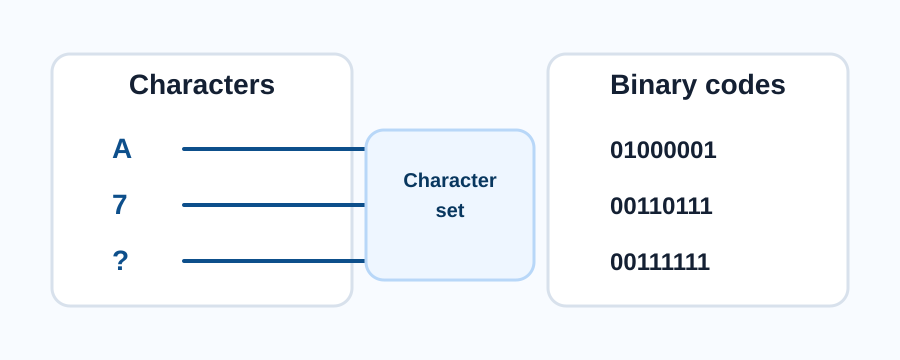
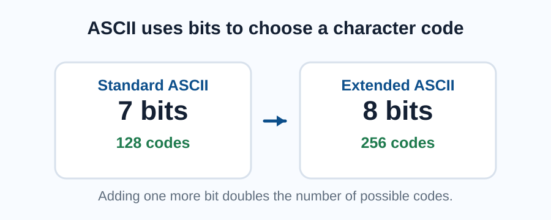
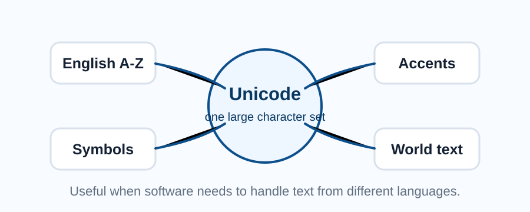

What is a character?
A character is any single letter, number, symbol or control instruction that a computer can store and process as text.
Examples include A, 7, ?, a space, a new line and punctuation marks. Computers only store binary, so each character needs a unique binary code.

Character sets
A character set is a defined list of characters and the binary codes used to represent them. If two computers use the same character set, they can interpret the same binary pattern as the same character.
For example, in ASCII the uppercase letter A is represented by decimal 65, which is binary 01000001.
| Term | Meaning | Example |
|---|---|---|
| Character | A single letter, number, symbol or control code | A, 4, ?, space |
| Character set | A list that matches characters to codes | ASCII or Unicode |
| Character code | The number or binary pattern assigned to a character | A = 01000001 in ASCII |
Comprehension questions
Q1) State what is meant by a character set. (1 mark)
A character set is a defined list of characters and the codes used to represent them.
Q2) Explain why character sets are needed. (2 marks)
Character sets are needed so computers can store text as binary and interpret the same binary codes as the correct characters.
ASCII
ASCII is an older character set that was designed mainly for English text. Standard ASCII uses 7 bits, which gives 128 possible codes.
Extended ASCII uses 8 bits, which gives 256 possible codes. This allows some extra symbols and characters, but it is still limited compared with modern text needs.

Activity
If standard ASCII uses 7 bits, how many different characters can it represent?
7 bits can represent 2 to the power of 7 values, so standard ASCII can represent 128 different codes.
Unicode
Unicode is a much larger character set. It was created so computers can represent characters from many languages, including accented letters, non-Latin scripts, mathematical symbols and emoji.
Unicode helps make text work consistently across different countries, devices and software.

Exam-style question
A website needs to store names written in many languages. Explain why Unicode would be more suitable than ASCII. (3 marks)
Unicode is more suitable because it can represent a much wider range of characters. ASCII is limited and mainly supports English text. Unicode can store characters from many languages, so names are less likely to be missing or displayed incorrectly.
Key points
- Computers store characters using binary codes.
- A character set links each character to a code.
- ASCII is small and mainly designed for English text.
- Unicode is much larger and supports many languages and symbols.